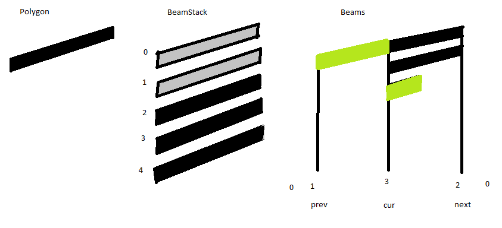

Chapter 7
Music Notes
The staff paper from the last chapter gets music on it: a font full of unlabelled symbols, note heads that snap to lines and share a time, stems with six layout rules, dots, flags, beamed groups, clefs and key signatures. This is the chapter where the editor stops being a demo of an architecture and starts being a notation program.
Follows the chapter Music Notes of Marlin Eller's Intermediate Java (sections Glyphs through Summary; the Refactoring section that follows is chapter 8). The original is written for Java and Swing; this page follows it in JavaScript in the browser and says where the two differ.
Glyphs: nobody tells you what is in a font
Bar lines, staff lines and stems are lines and rectangles, but clefs, flags, rests and note heads are shapes, and drawing them as outlines would be a chapter of its own. Instead the course hands you sinfonia.ttf, the music font Eller's old company built, and one small class, Glyph, that maps it into the program.
A private symbol font like this has no standard. The symbols are in no particular order, at no particular size, sitting on no particular baseline, and no documentation exists. Eller's point is blunt and worth taking seriously: if you want to know what is in a font, write code that draws the font and look at it. That is what the GlyphSheet demo does. It prints all 224 characters with their numeric codes and a baseline under each, so you can find a symbol, read off its code, and then work out what scale and offset it needs.
A Glyph is four numbers: the character code, a scale, and a dx/dy offset. The scale and the offsets are all expressed in units of H, the staff's half-line spacing, which is what makes the class useful. Fonts are drawn from a left edge and a baseline; music is positioned by staff line. showAt(g, H, x, y) takes the point where the symbol belongs musically, its hot spot, and converts it into the baseline point the font wants:
g.drawString(String.fromCharCode(this.code), x + Math.floor(this.dx * H), y + Math.floor(this.dy * H));
So a G clef's hot spot is the center line of the staff, a note head's hot spot is the middle of the head at its left edge, and every caller can say "put this on line 4" without knowing anything about typography. Getting each dy right is exactly the groveling described above: the course walks into it with HEAD_HALF, which shipped with a dy of 0 and drew half notes an octave into the sky until it was changed to 7. The quarter head turned out to be the next code along, and the whole head the one before.
The accidentals are a case the course leaves as an exercise: it uses sharps and flats for key signatures but never says where they live in the font. The codes in this port (61511 natural, 61512 flat, 61513 sharp) were found with the sheet above. The flat's hot spot is its loop rather than its middle, so its dy is the one fractional offset in the file.
new Font("Sinfonia", 0, size) finds it. A browser cannot install fonts, so Glyph.loadFont() registers the .ttf with the page through the FontFace API and resolves a promise when it is ready; the lesson pages and the app await it before mounting anything. The rest of Glyph is the course's code, including Math.trunc(scale) * H, which is Java's (int)scale*H. The rest of the differences are cosmetic: the course's showAt always forced the color to black and always drew a red H × H box at the hot spot, which is how you check an offset; both were removed later in the chapter so that heads could be colored. Here the box survives behind the Glyph.debugBoxes flag.Heads and Time
The Head class starts as small as it can be: a staff, a line and a gesture to make one. A SW-SW tick on a staff creates a head, and the constructor is what snaps it to a line, so the reaction can hand over a raw pixel y and forget about it. The snapping lives in Staff.lineOfY, and it carries two tricks worth pausing on. Adding H/2 before dividing turns truncation into rounding. And because integer division truncates toward zero, not downward, ledger lines above the staff (negative line numbers) would round the wrong way, so the code moves the origin a hundred staff heights up, divides, and subtracts the bias back off.
Next comes the constraint that makes it music rather than drawing. In notation, x is time: two heads at the same x sound together as a chord, and two heads that do not sound together must not overlap. The composer should be able to put a head anywhere, but once an x exists nearby, a new head must snap to it. That shared x gets a class of its own, Time, and a system owns the pool of them. Time.List.getTime(x) returns the closest existing time if it is within UC.snapTime (30 pixels) and otherwise makes a new one. A Time also keeps the list of heads that share it, which is what later lets one gesture stem a whole chord.
Everything else a head might want to know turns out to belong somewhere else. Whether it is a quarter, a half or a whole head, how many dots it has, how many flags: all of that is shared by every head in the chord, so all of it is kept on the stem. A head with no stem does not have a duration yet, and the port draws such heads in red to say so.
One member of Head is there purely as a place to grow into: forcedGlyph is almost always null, meaning "work the head shape out from the flag count", and exists so that the two notations that override the shape, bowed tremolos and shaped notes, would have somewhere to go. Neither is implemented in the course. Leaving a labelled hole in a design is cheaper than retrofitting one later.
The reactions that create heads and rests are not in Head or Rest at all; they are in Staff, because until the thing exists there is nothing else for the gesture to land on. The staff is the mark on the page that the user is drawing on, so the staff is what bids. Staff.onStaffBid is the shared test: inside the page margins, and within one line above or below this staff.
Duration and Rests
Stems and rests both need a flag count and a dot count, and both must be Mass objects so they can draw. Java has single inheritance, and the course points out that this is not the problem it looks like: put Duration between them, so Mass → Duration → Stem and Rest. Duration.show is abstract, because until you know which one you are there is nothing to draw.
The flag count is the whole duration system, and it is allowed to go negative even though notation has no such thing: 0 is a quarter, 1 to 4 are eighth through sixty-fourth, −1 is a half and −2 is a whole. Negative counts simply change the head glyph instead of drawing flags, and a whole note's stem still exists (it just is not drawn), so it can still be dotted and still be flagged back up into a half and a quarter. Dots do not go negative; they cycle 0, 1, 2, 3, 0.
A Rest is then a Duration plus a staff and a time, always on the center line. W-S draws a quarter rest, E-S draws an eighth rest because an eighth rest looks like a 7; every other rest is reached by flagging one of those up or down with E-E and W-W across it, and DOT on it dots it. The show routine is an array lookup indexed by nFlag + 2. Note that the whole rest and the half rest are the same character in the font, hung at two different dy values, because on paper they are the same little rectangle sitting on opposite sides of a line.
The rest always lands on the center line, which is often wrong. The course lists the ways you could fix it (use the y of the gesture, add nudge gestures, have rests move away from notes at the same time) and then deliberately does none of them: full automatic layout is not what this course is about.
Stems Day 13
A stem is three numbers, x, y1, y2, and a surprising number of rules for computing them. Before any of them there is a measurement to make: how wide is a note head? The glyphs are scaled so a head is 2H tall, but the width is whatever the font designer chose. The course boxes a very large head on screen, finds 3H too wide and 2.4H about right, and puts that number in Head.W() rather than in UC, on the grounds that the head is the thing that chose the font, so the head is where you would look for the answer.
The rules the course then enumerates, and where each one lives in Stem.js:
| Rule | Code |
|---|---|
| An up stem leaves the right side of its heads and goes up; a down stem leaves the left side and goes down. | x() adds h.W() when isUp |
| The default length is one octave, 7 lines, measured from the head farthest from the note end. | yBeamEnd(): line += isUp ? -7 : 7 |
| An octave leaves room for two flags. Every flag past two needs 2 more lines (a flag plus its gap). | flagInc = nFlag > 2 ? 2 * (nFlag - 2) : 0 |
| If the stem can reach the center line it must: a high note with a down stem is stretched down to line 4. | the clamp to line = 4 |
| Two heads a second apart would overlap, so one is displaced to the wrong side of the stem. | setWrongSides(), Head.x() |
| The first head, the one farthest from the beam, is always on the right side. | the walk in setWrongSides() starts there |
The last two rules are why the heads on a stem are kept sorted. Head.compareTo orders by staff and then by line, setWrongSides sorts, starts from the first head with wrongSide = false, and walks toward the beam end putting a head on the wrong side only when it is within one line of its predecessor and its predecessor was not itself displaced. A student found the bug in the first version of that test: two heads a line apart but on different staffs are not a second, which is why the condition also checks ph.staff === nh.staff.
Notice what the course does not do: it never picks a stem direction for you. Real notation programs create a stem the moment you create a head, because they are uncomfortable with music in an incomplete state. Here you draw the head, and then you draw the stem, and the direction is whatever you drew. That is a user interface choice, not a limitation, and it is what makes two-voice writing possible without any mode.
The gesture is a single S-S stroke beside a head: to the right of the head it makes an up stem, to the left a down stem, and drawn through heads that are already stemmed it unstems them. It is also the first reaction whose action affects objects other than the bidder. Every head the stroke passes bids, and they all bid about the same, so which one wins is close to arbitrary; that does not matter, because the winner is used only for its Time and for its stemmed-or-not state, and the action then works on every head at that time inside the stroke's y range.
Two guards in that file look wrong until you know the story. show() refuses to draw a stem with no heads, and x(), yFirstHead() and yBeamEnd() return nonsense constants instead of crashing on an empty head list. In the course this was a genuine race: Swing paints on a different thread, and it can walk the layers in the sliver of time after a Stem has added itself to a layer but before its heads are attached. The second reason the course gives later is the better one for us: a malformed structure that draws something visible in the wrong place is far easier to find than one that throws.
idiv() from G.js is used wherever the Java did an int division (head width, line numbers, dot placement) and Math.trunc where it did a cast, because line numbers and beam slopes that round differently are visibly wrong.Dots Day 14
Dotting a head is honest about being a stub. The real rule is that an augmentation dot goes in the middle of the nearest space, so a head on a space is dotted straight after it, while a head on a line is dotted slightly above or below, and when two heads are a second apart you have to pick the spaces so the two dots do not collide. All of that also has to dodge flags. The course states the rules, declines to implement them until beams exist, and copies the dot loop out of Rest.show so that dots at least appear.
The reaction is more interesting than the drawing: a DOT gesture just after a head bids by its distance from the point one head-width to the right, and the action dots the head's stem, so every head in the chord gets the dot at once. A head with no stem cannot be dotted, because it has no duration to extend.
Flags
Flags need no new state at all: the stem length already reserves room for them, so it is two reactions and a few lines of drawing. E-E across a stem increments the flag count, W-W decrements it, and both use the same bid, which is the course's excuse for a short digression on whether extracting a shared bid helper is an improvement. Its verdict is "not much": you gain a single place to change, and you lose the ability to read a reaction without looking anywhere else. This port keeps the extracted version (crossBid in the Stem constructor) mostly because the same bid also has to be biased against the beam reaction below.
The one thing to watch when drawing them is the naming: an up stem takes the down flag glyph, FLAG1D, because the flag hangs off the top of the stem and curls downward. And flags are drawn only when the stem is not beamed, which was a real bug during the beam work.
Beams
A beam is both a duration marker and a grouping: it says "these notes are one beat, count them together". The way it is drawn with ink guides the way it is built in code. You write the heads, you stem the first and last notes of the group by the usual rules, you draw one beam between those two stem ends, and only then do the inner stems get their length, by running down to the line you just drew. The gestures follow exactly that order.
The new gesture is an E-E across two stems, which conflicts with the E-E that flags a single stem. The answer is context, not a new shape: a reaction that notices the stroke crossed exactly two unbeamed, unflagged stems bids low and wins, and the same reaction handles the other case, a stroke across a group that is already beamed, by adding one beam to every stem it crossed. That reaction belongs to the Sys, because the system is what can see all the stems.
Seeing all the stems means keeping them: Stem.List hangs off each Sys. It carries a deliberately loose yMin/yMax, seeded at ±1000000 so the first stem fixes them, purely as a fast reject: if a gesture's y range misses a system's stems entirely, no stem in it can be crossed and the loop is skipped. The bounds are never tightened when a stem is removed, and the course is explicit that this is fine, because they are an accelerator and not an answer.
Beamed groups slant, so "did this stroke cross that stem" cannot be a comparison against one y. It is a sloped segment against a vertical one, and the same little piece of math is needed in three places: to find an inner stem's beam end, to test a gesture against stems, and to draw beams that do not span the full group. It becomes Beam.yOfX, a static, plus a buffered four-int version so the master beam does not have to be passed around. The course flags the buffer as dangerous and keeps it anyway, which is a fair summary of how the rest of the class works.
Then the class itself. Thinking of a beam as the black ink on the page turns out to be the wrong model; a Beam is a drawing machine over a sorted list of stems. The first and last stems define the master beam line, every other stem is internal and simply ends on it, and the stack of parallelograms is computed from the flag counts.
Polygons and beam stacks Day 15

Every polygon in a group is 1H tall with a 1H gap, parallel to the master beam, so drawBeamStack(g, n1, n2, x1, x2, h) draws slots n1 up to n2 between two x values. Slot 0 sits on the master beam. Passing a negative h flips the whole stack, which is exactly what a down stem needs, so one helper serves both directions. It reuses one statically allocated 4-point Polygon rather than allocating one per beam per paint, so a page full of beams does not feed the garbage collector on every repaint.
The reason the helper is this general is that the same stack of parallelograms draws things that are not beams at all. Bowed tremolo marks are a stack across a single stem, or a stack floating between two stems and touching neither; they line up with a master beam and indent their x values. Writing drawBeamStack to take a slot range and two arbitrary x values covers all of it, and it is what makes beamlets possible below.
What the stack machine has to work out is beamlets: the short stubs that attach to one stem only. Eller's name for them is shorter than the standard "secondary beam" and he is not apologetic about it. The rule is that every stem needs as many beams and beamlets as it has flags, so the number of full beams between two stems is the smaller of the two flag counts, and a stem whose count exceeds both neighbors needs beamlets to make up the difference.
A beamlet leans right off the first stem, left off the last one, and on an internal stem it leans toward whichever side already has more full beams, so it continues the stack rather than leaving a gap. drawBeamGroup is that rule with three counters, nPrev, nCur, nNext, walking the list; the loop runs from stem 1 because there is one gap fewer than there are stems, while beamlets are handled per stem, which is why stem 0's beamlets are dealt with before the loop.
Adding an inner note to an existing group needs no new gesture either. The same S-S that stems heads asks, through Stem.internalStem, whether the vertical stroke crossed some group's master beam; if it did, the new stem joins that beam and gets one flag. That question also pushed a refactor: building a stem was moved out of Time and into the factory Stem.getStem(staff, time, y1, y2, up), which collects the heads in range first and only then constructs, so a Stem is never headless and can safely add itself to the system's list in its own constructor.
The two E-E reactions have to be told which one wins. The beam reaction bids a flat 50; the single-stem flag reaction adds 60 to its distance, so crossing two stems beams them and crossing one flags it. Bidding is the only arbitration in this architecture, so a magic +60 in a bid is the priority system.
Clefs
A clef says which pitches the lines mean, and its defining behavior is that it continues: a staff starts in whatever clef the same staff of the previous system ended in, until a composer changes it, and the change then propagates forward. That behavior chooses the design. Each Staff gets a clefs list that is null on nearly every staff, because clef changes are rare; initialClef() walks back through previous staffs until it finds one that has any, and takes that staff's last clef.
The course is careful to flag that previousStaff() is only correct for a single page: it stops at the top of the page instead of stepping back into the previous one, which is a real limitation and not a bug, given that the demo has one page.
Since the clef at the front of a staff is a consequence of that walk rather than an object, it is drawn by Staff.show and is not a Mass at all. The very first clef ever drawn on a chain of staffs is stored at the head of the chain with a negative x (−900 here) so that it never draws itself as a mark on the page. Every other Clef has a real x, draws itself, and changes what follows.
The gestures are pictograms of the mathematical symbols: SW-SE is a "<" and makes a G clef, SE-SW is a ">" and makes an F clef, both drawn from the top line of a staff to the bottom line so the bid can tell which staff you meant.
Key Signatures
A key signature is a pile of sharps or flats after the clef, or after a double bar when the key changes. Which notes get signed is not the composer's choice: one sharp is always F, three are always F, C, G in that order. But where those notes sit depends on the clef, so a key needs four little tables of line numbers, sharps and flats crossed with G and F clefs. The course notes the only real cost of putting layout in data rather than code: you now have to test every number.
The design is deliberately not the clef design, and Eller says so: this is a course about interface choices, and he wants a second answer visible next to the first. Keys are handled as two systems that do not talk to each other. A Sys has an initialKey, changed by an E-E or W-W across the left margin. A Bar may have a key, changed by the same strokes across the bar, and only if it is a double bar, since a double bar is what a key change means on paper. The mark at the bar does not propagate; the composer is expected to keep the two in step. That is work pushed onto the user, which would be wrong in an application and is cheap in a demo.
Cancelling a key needs naturals rather than an empty gap, so a Key carries a glyph as well as a count, and Bar.incKey/decKey encode a small state machine: decrementing a sharp key switches the same count to naturals, incrementing or decrementing from naturals drops to one sharp or one flat. Naturals are only ever used at a bar; an initial key signature never shows them.
UnStemming beams, and a rant about equals
Taking things apart is where the chapter finds its worst bug. Removing a head from a stem, deleting the stem when it empties, and deleting the beam when it loses a supporting stem all sounded routine, and instead ArrayList.remove(stem) removed a Beam. The list was right, the element was in it, and the removal took out the wrong object.
The cause was equals: ArrayList finds elements with equals, not ==, and in Eller's build a Stem claimed to equal a Beam. Overriding equals and hashCode in Mass to be identity fixed it. He never found out why it was broken, and the moral he draws is the useful part: everything under you is code written by people and is full of bugs, so once you know what is wrong you are allowed to work around it and move on.
equals/hashCode pair in Mass. Array.prototype.indexOf compares with strict equality on object identity, which is the behavior the course had to restore by hand; every removal here is indexOf plus splice. The rant is still worth reading in the original.The teardown rules themselves are small and worth stating, because they are what keeps the structure consistent. Head.unStem calls Stem.removeHead, which drops the head, clears its stem and wrongSide, and deletes the stem if that was the last head. Stem.deleteStem takes the stem out of the system's list, out of its beam, and out of the layers.
Beam.removeStem makes the judgement call: an internal stem simply leaves, but losing the first or last stem deletes the whole beam, because there is no obvious right answer for repairing it. And a beamed stem whose flags are taken down to 0 cannot stay in a group, so the W-W action deletes the beam; the stems, flags and dots all survive, only the beams go.
Summary
About 25 classes and a couple of thousand lines produce a demo that draws systems, staffs, three kinds of bar line, three kinds of head, stems, flags, beams with beamlets, rests, dots, clefs and key signatures, entered entirely with the pen. There are no time signatures, no accidentals, no ties, no dynamics, and none of the things a real application needs: saving, printing, more than one page. It is a demo, but it is the kind of demo that a project is supposed to produce first, the one that answers "will this architecture actually carry the application?" For the reaction architecture, the answer was yes.
Every gesture in the chapter, and the class whose reaction owns it:
| Gesture | Where | What it does |
|---|---|---|
SW-SW | Staff | a note head, snapped to the nearest line or space |
S-S | Head | right of a head an up stem, left a down stem, through stemmed heads unstems them |
E-E | Stem, Sys | across one stem a flag, across two unflagged stems a beam, across a beamed group one more beam |
W-W | Stem | one flag fewer, down through quarter and half to whole (and out of any beam) |
DOT | Head, Rest | augmentation dots on the stem or the rest, cycling 0 to 3 |
W-S / E-S | Staff | a quarter rest / an eighth rest |
E-E / W-W | Rest | across a rest, one flag more or fewer |
SW-SE / SE-SW | Staff | a "<" is a G clef, a ">" is an F clef, drawn top line to bottom line |
E-E / W-W | Sys, Bar | across the left margin, the system's key; across a double bar, a key change |
N-N | Gesture | undo, by replaying every gesture but the last |
Everything on this page is in the editor below. Some things are easier to feel than to read about: draw two heads a line apart and stem them to watch the second get displaced, beam three notes and then flag only the middle one to see a beamlet appear.
The layout rules are the part most likely to break silently, so they are tested headlessly rather than by eye: tests/music.test.js drives synthetic strokes through the real Gesture.AREA and asserts on octave stem lengths, the extra length for three flags, the stretch to the center line, displaced seconds, beam membership, the interpolated beam end of an internal stem, and the number of polygons a two-beam group draws.
Stem.getStem is the factory rather than Time.stemHeads, removeHead and deleteStem already handle beams, the beam creation reaction already lives on Sys, and the show guards are already there. Reading the two side by side, expect the port to look like the last version of each listing rather than the first.